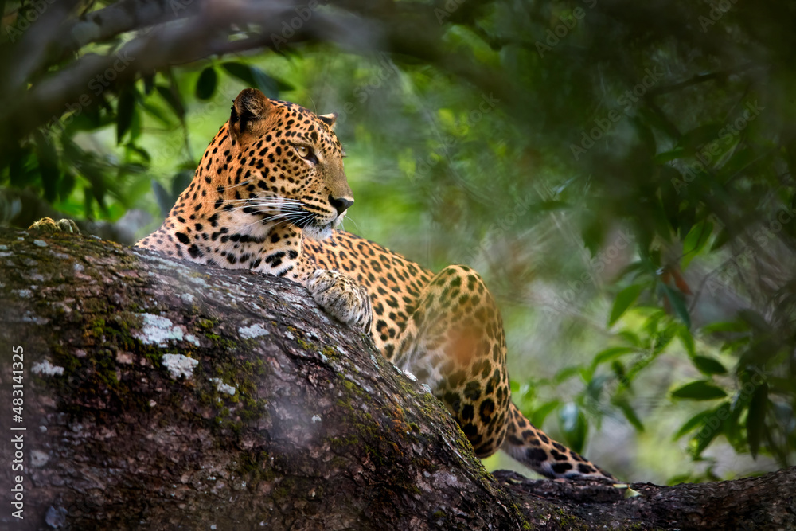
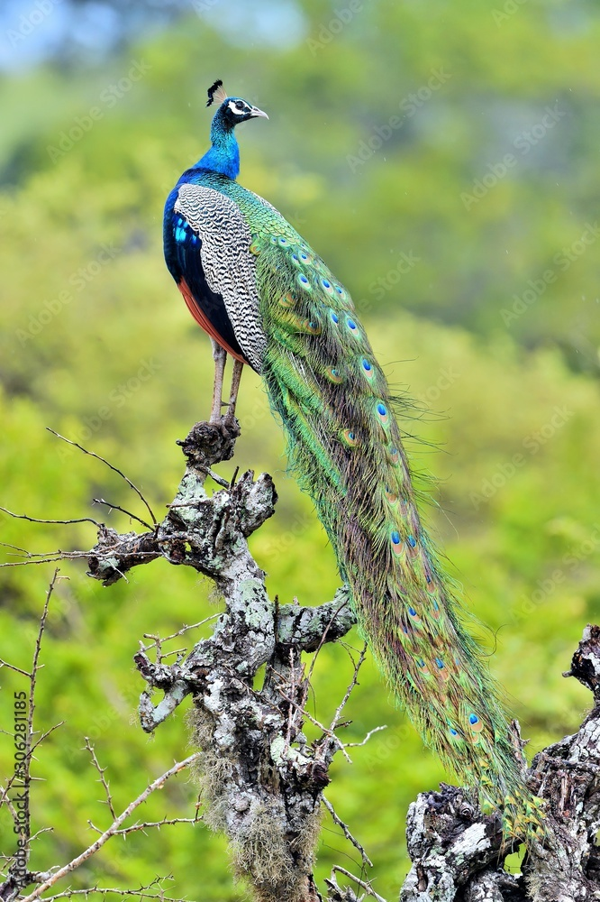

Image:


Established in 1972 as a haven for wildlife displaced by the Udawalawe Reservoir's construction, Udawalawe National Park spans 30,821 hectares at the Uva-Sabaragamuwa province borders in Sri Lanka. Ranking as the third most visited park, it is renowned for its vital role in water bird conservation and its significant population of around 600 Sri Lankan elephants, often seen in herds of up to 50.
The park's landscape, resembling an African game park, features thorny-shrub jungles and grasslands.
Alongside elephants, it hosts water buffalo, wild boar, spotted deer, sambur deer, jackals, and crocodiles, making it a popular tourist destination offering exceptional elephant safari experiences.
Animals |
Facts |
Images |
|---|---|---|
Leopard |
The Sri Lankan leopard (Panthera pardus kotiya) is a subspecies native to Sri Lanka, listed as Vulnerable on the IUCN Red List with a population of less than 800 mature individuals. |
 |
Elephant |
The Sri Lankan elephant (Elephas maximus maximus) is a subspecies of the Asian elephant, native to Sri Lanka, with a population of 2,500-4,000. |
 |
Peafowl |
The native Sri Lankan Indian peafowl (Pavo cristatus) boasts vibrant plumage and distinctive calls, making it a unique and visually striking bird species. |
 |